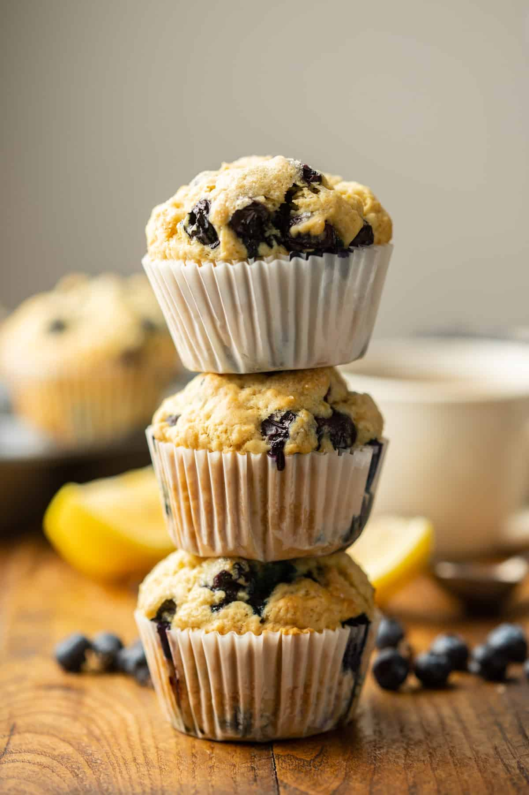

Vegan Lemon Blueberry Muffin Recipe
Recipe from the Cannoisseurus Veg

I came across this recipe a few years ago when I was going through a
baking phase. Particularly a muffin baking phase. One of my roommates
was a vegan and I also try to stick to vegan recipes when I can. I
also love lemone muffins and I love blueberry muffins so might as well
combine the two! I have been obsessed with this recipe ever since and
have made it countless times by now. All my friends, vegan or not, love
these muffins so they had to make the cut.
Ingredients
- 2 cups and 2 tablespoons all-purpose flour
- 1/4 cup organic granulated sugar
- 1/4 cup brown sugar
- 2 teaspoons baking powder
- 1/2 teaspoon soda
- 1 cup unflavored soy or almond milk
- 1/3 cup canola oil
- 1 and 1/2 teaspoons vanilla extract
- Juice of one lemon
- zest of one lemon
- 2 cups of blueberries
Instructions
- Preheat oven to 400 degrees farenheit.
- Line a 12 cup muffin tin with papers.
- In a large mixing bow, whish together the flour, sugar, brown sugar,
baking powder, baking soda, and salt.
- In a separate, smaller bowl or liquid measuring cup, stir together
the milk, oil, vaanilla, lemon juice, and lemon zest.
- Add the liquid mixture to the dry mixture and stir just until blended
- Fold in the blueberries.
- Divide the baatter among muffin cups, then optionally sprinkle
the tops with 2 teaspoons of sugar.
- Bake 17 to 20 minutes, until a toothpick inserted into the center of
a muffin comes out clean.
- Remove the muffins from the oven and transfer the tin to a
cooling rack. Allow the muffins to cool completely before removing them
from the tin.